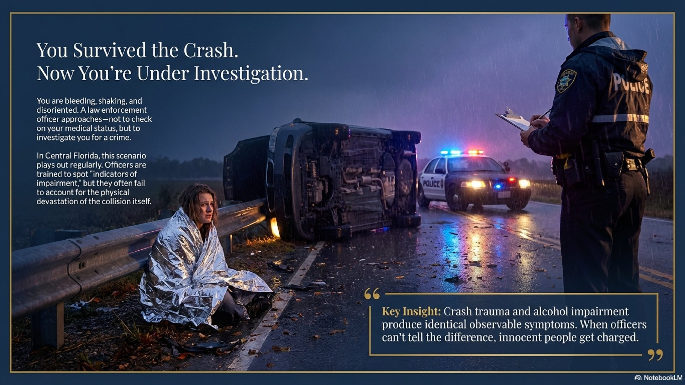

When a Car Crash Looks Like DUI: How Crash Trauma Creates Reasonable Doubt

You survive a car crash. Your vehicle is overturned. Emergency crews arrive. You're bleeding, shaking, disoriented. Then a law enforcement officer approaches -- not to check on you, but to investigate you for DUI. Every symptom you're experiencing from the crash looks exactly like alcohol impairment to the officer writing the report.
This scenario plays out regularly in Central Florida. And it leads to DUI arrests that never should have happened. The problem is that crash trauma and alcohol impairment produce identical observable symptoms. When officers can't tell the difference -- and don't account for the crash itself -- innocent people get charged. But when a defense attorney forces the jury to consider both explanations, the result can be very different.
The Problem: Crash Symptoms Look Exactly Like Intoxication
Officers are trained to look for specific "indicators of impairment" during a DUI investigation. But nearly every indicator on their checklist has an equally valid medical explanation after a car crash.
What the Officer Observes vs. What's Actually Happening
| Symptom | Alcohol Explanation | Crash Explanation |
|---|---|---|
| Bloodshot, watery eyes | Alcohol consumption | Dust, airbag chemicals, crying, debris |
| Slurred speech | Impairment | Shock, head trauma, stress, fatigue |
| Unsteady on feet | Impaired balance | Leg injuries, knee injuries, shock |
| Orbital sway | Alcohol effects | Inner ear disruption, head trauma |
| Confusion | Intoxication | Concussion, shock, adrenaline crash |
| Slow responses | Impairment | Pain, exhaustion, shock |
| Shivering, trembling | -- | Shock response (even in warm weather) |
Every single observation an officer makes after a crash can be explained by two competing theories: alcohol impairment or crash trauma. When the evidence supports both explanations equally, the law requires a verdict of not guilty.
Why Even Sober Drivers "Fail" Field Sobriety Exercises After a Crash
Field sobriety exercises are designed to test divided attention -- your ability to balance, follow instructions, and coordinate movements simultaneously. But these tests assume a baseline: a person who is physically uninjured, mentally calm, and standing on a level surface. A crash victim meets none of those conditions.
Physical Injuries Compromise Every Test
- Walk and Turn -- Requires heel-to-toe walking in a straight line. Knee injuries, hip pain, or leg lacerations make this impossible to perform normally.
- One Leg Stand -- Requires standing on one foot for 30 seconds. Any lower body injury, back pain, or dizziness from head trauma will cause "clues" the officer counts as impairment.
- HGN (eye test) -- Measures involuntary eye movement. Head trauma, inner ear disruption, and even airbag deployment chemicals can produce nystagmus that has nothing to do with alcohol.
The Shock Response Changes Everything
After a serious crash, the body's sympathetic nervous system activates a fight-or-flight response. This produces measurable physiological changes:
- Impaired concentration and scattered thinking
- Trembling and shivering -- even when the temperature is warm
- Emotional volatility -- crying, agitation, or appearing "out of it"
- Difficulty following multi-step instructions
These are the exact same "clues" officers are trained to look for during DUI investigations. The difference is the cause.
The Time Gap Factor
There's a critical detail most people overlook: when the officer makes observations matters enormously. Crash effects don't improve with time -- they often get worse. Adrenaline wears off 30-60 minutes after the crash, causing an "adrenaline crash" that produces fatigue, confusion, and unsteadiness. If the officer arrives 30-40 minutes after the crash and administers field sobriety exercises 45 minutes after that, the person's condition reflects crash trauma plus time -- not impairment at the time of driving.
The Legal Standard: When Two Explanations Exist
Florida law is clear on this point. When the State's case rests on circumstantial evidence -- and in crash DUI cases, it almost always does -- the evidence must be inconsistent with any reasonable hypothesis of innocence. If the evidence is equally consistent with innocence as with guilt, the jury must acquit.
The Circumstantial Evidence Standard
Where the only proof of guilt is circumstantial, a conviction cannot be sustained unless the evidence is inconsistent with any reasonable hypothesis of innocence. Medical impairment from a car crash is a reasonable hypothesis of innocence. If the State cannot eliminate it, the jury should find reasonable doubt.
This is the heart of the medical impairment defense. The defense attorney doesn't need to prove the defendant was sober. The defense only needs to show that crash trauma is a reasonable alternative explanation for the symptoms the officer observed. If it is, the State hasn't met its burden.
Real Case: Jury Acquittal on the Medical Impairment Defense
We recently took a DUI case to jury trial where the medical impairment defense was the central argument. Here are the facts:
What Happened
- A three-vehicle crash -- our client's vehicle was overturned
- A third vehicle had cut our client off, causing an evasive maneuver that led to the crash
- The responding officer arrived 40 minutes after the crash
- Our client was found exiting an ambulance, not the vehicle
- Field sobriety exercises were administered 85 minutes after the crash
- Our client had bleeding knees and was visibly shivering
- The officer noted "orbital sway," slurred speech, and bloodshot eyes
- Our client refused the breath test -- there was no BAC number
- Medical attention was required -- our client was ordered to the hospital
The Defense
Every observation the officer documented had an alternative explanation:
- Bloodshot eyes -- Consistent with crying, dust, and debris from a rollover crash
- Slurred speech -- Consistent with shock and head trauma from an overturned vehicle
- Unsteadiness -- Consistent with bleeding knee injuries
- Orbital sway -- Consistent with inner ear disruption from the crash
- Shivering -- Classic shock response, unrelated to alcohol
- No BAC evidence -- Without a breath or blood test, the State had no scientific proof of impairment
During cross-examination, the arresting officer acknowledged having received substantially more training since the date of the arrest -- an implicit admission that the investigation may not have met current standards.
Result: NOT GUILTY
The jury returned a verdict of not guilty. They found reasonable doubt because the State could not prove that the symptoms the officer observed were caused by alcohol rather than crash trauma. Every piece of evidence was equally consistent with innocence.
Key Factors That Strengthen a Crash DUI Defense
Not every crash DUI case is the same, but certain factors consistently strengthen the medical impairment argument:
What Makes This Defense Stronger
- Time gap -- The longer between the crash and the officer's observations, the more likely symptoms reflect crash trauma, not driving-time impairment
- Documented injuries -- Bleeding, visible injuries, and medical transport all support the trauma explanation
- Medical attention required -- If the defendant was transported to a hospital or treated by EMS, it corroborates the severity of the crash
- No breath or blood test -- Without a BAC number, the State relies entirely on officer observations -- which are all explained by the crash
- Crash severity -- Rollovers, multi-vehicle collisions, and high-impact crashes produce more severe trauma symptoms
- Third-party fault -- If another driver caused or contributed to the crash, it undermines the narrative that the defendant's driving was impaired
What To Do If You're Arrested for DUI After a Car Crash
If you're ever in this situation, the steps you take in the first hours can significantly affect the strength of your defense:
- Request medical attention -- Ask for EMS evaluation, even if you think your injuries are minor. Medical records documenting your condition become evidence that your symptoms were crash-related.
- Note the time -- Pay attention to how much time passes between the crash and when the officer begins the DUI investigation. The longer the gap, the stronger the medical impairment argument.
- Document your injuries -- If possible, take photos of visible injuries. If you can't, ask a family member or attorney to photograph them as soon as possible.
- You have the right to decline field sobriety exercises -- These are voluntary in Florida. You cannot be penalized for refusing roadside exercises.
- Contact a defense attorney immediately -- An attorney experienced in crash DUI cases can begin preserving evidence, obtaining crash reports, and building the medical impairment defense before evidence is lost.
Arrested for DUI After a Car Crash?
Not every crash with impairment signs is a DUI. If you or someone you know was arrested for DUI following a car accident, the symptoms the officer observed may have a medical explanation that creates reasonable doubt. Contact Lotter Law for a free consultation to discuss your case.
Call (407) 500-7000 or email jeff@jlotterlaw.com

Jeff Lotter
Criminal Defense Attorney & Former Florida State Trooper. Jeff brings a unique law enforcement perspective to criminal defense, helping clients in Orlando and Central Florida navigate the justice system.
Related Articles
DUI & DWI Defense in Florida: What You Need to Know
Comprehensive overview of DUI charges, penalties, and defense strategies in Florida.
Challenging the HGN Eye Test in DUI Cases
How head trauma and medical conditions produce nystagmus that has nothing to do with alcohol.
Refusing Roadside Sobriety Tests in Florida
Your right to decline field sobriety exercises -- especially after a crash when injuries compromise results.
Corpus Delicti: Authority vs. Evidence at DUI Trial
The State must prove impairment at the time of driving -- post-crash observations may not meet that burden.